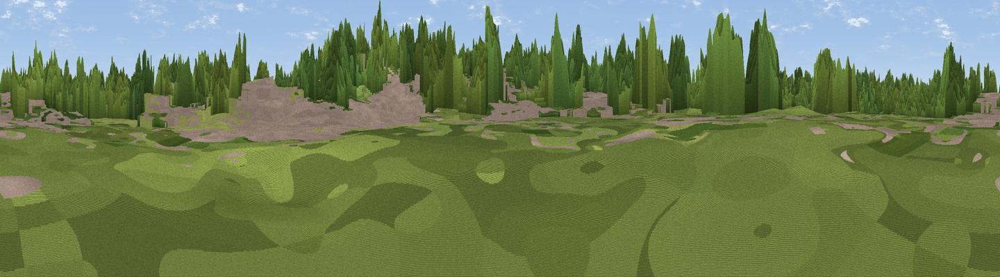

Viewpoint near Davenham
#46095 in England · top 99% of its area beats it · near DavenhamThe view, rendered

A 360° render of this exact spot computed from the terrain model, tree cover and land cover — summer colours, afternoon light, calibrated against photographs of famous viewpoints. Real trees, hedges and buildings will differ in detail.
The panorama
Grey silhouette: terrain skyline in each direction (720 bearings, Earth curvature and refraction included). Dashed green: skyline with trees (+15 m) and buildings (+8 m) as obstacles. Blue strip: how far the ground is visible on each bearing.
Where the view opens
Wedge length = distance to the farthest visible ground on that bearing (vegetation-aware). Rings at 10, 25 and 50 km.
What fills the view
54% woodland · 33% built-up · 10% grassland · 3% cropland ·
Angular shares of the visible panorama (visual magnitude), not map area. Landscape diversity 0.46 (0–1 Shannon).
Key numbers
More beautiful places nearby
The staircase of upgrades: each row has a higher view potential than everything closer. Driving times are estimates from straight-line distance, calibrated against real road routing — check an actual route before setting out.
| Place | Direction | Drive | Score |
|---|---|---|---|
| Gallowsclough Hill | W · 8 km | ~17 min | 23.7 |
| Eddisbury Hill | WSW · 10 km | ~20 min | 71.1 |
| Hangingstone Hill - Pale Heights | WSW · 11 km | ~21 min | 73.3 |
| Beacon Hill | WNW · 14 km | ~26 min | 77.3 |
| Viewpoint near Harthill | SW · 22 km | ~37 min | 80.5 |
| White Brow | N · 40 km | ~60 min | 82.9 |
| Viewpoint near Little Wenlock | S · 63 km | ~86 min | 84.2 |
| The Wrekin | S · 64 km | ~87 min | 85.0 |
53.24311, -2.52145 · source: osm viewpoint · position refined by local search. Computed location — check access rights before visiting.